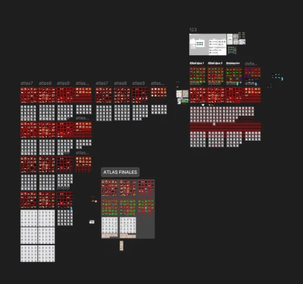
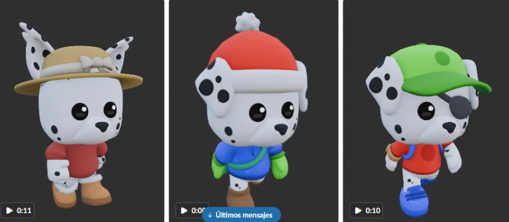
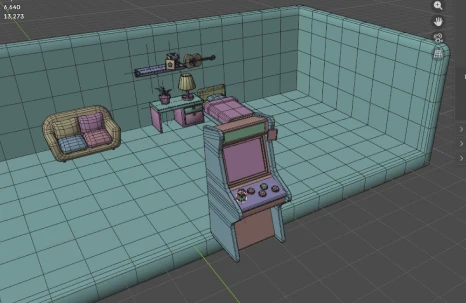

Agosto · 2026
El álbum de pesca y los ojos del Yunipet
Los peces heredaron los ojos de los Yunipets. Cada especie empezó a tener su propia ficha en el álbum, al tiempo que el equipo probaba el parpadeo sobre la cara de la mascota.
Abrir el álbum de peces ↓ Ver el parpadeo ↓
Agosto · 2026
Avances por sistema
PescaDe las islas al álbum de especies
Qué se hizo
Se definió el aspecto de los peces tomando como referencia los ojos finales del Yunipet. Se exploraron cámaras para la pesca y se diseñó el recorrido de un álbum para guardar las capturas.
Cómo funciona
El mapa sitúa los destinos y distingue los que siguen bloqueados. El álbum agrupa los peces y permite reconocer cada especie por su ilustración y nombre. La colección reúne las treinta fichas para compararlas.

Creador y expresiónMontar el personaje y darle una mirada
Qué se hizo
Se creó un complemento de Blender para montar personajes y se probó un material de color para la mascota. El ojo ganó color RGB sobre una malla y unas coordenadas de textura comunes, con un atlas de 25 filas.
Cómo funciona
El atlas reúne las expresiones en una imagen. Elegir una fila cambia el dibujo sin reemplazar el ojo. Los dos atlas del visor permiten comparar expresiones y la prueba muestra la secuencia del parpadeo.


VestuarioDel plan de colecciones al modelo que se deforma
Qué se hizo
Se planificó la ropa por colecciones y se produjeron los primeros modelos 3D con geometría y pesos sobre el personaje.
Cómo funciona
Los pesos vinculan la prenda con los huesos del Yunipet para que siga su postura. La prueba compara el ajuste de prendas distintas sobre la misma base antes de ampliar los conjuntos en septiembre.


EscenariosConstruir el arcade y dar escala a la vegetación
Qué se hizo
Se montó una escena del arcade reutilizando objetos ya creados. Para los exteriores se exploraron tamaños y tipos de vegetación con conceptos asistidos por IA y primeras plantas.
Cómo funciona
La sala muestra cómo muebles existentes pueden formar un escenario nuevo. En exterior, colocar las plantas junto al personaje permite juzgar altura y volumen antes de poblar el entorno.

Colección de agosto
El álbum, las miradas y el entorno
Los peces del álbum
Elige una ilustración para ver sus colores y su expresión. Toca el pez para ampliarlo.
Ver las pruebas de parpadeo
Prueba de agosto
Dos pruebas de parpadeo
Elige una de las 25 expresiones y compara los dos atlas sobre el mismo rostro. Las capturas de Unity reproducen el ritmo de la prueba original.